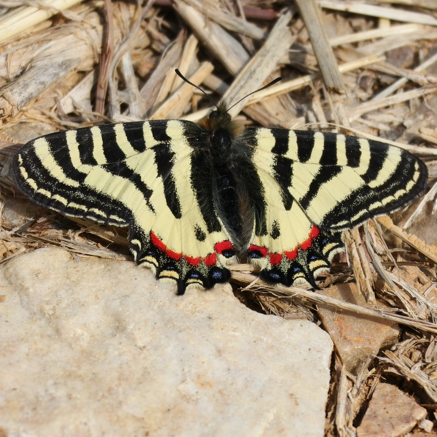

昆虫 · 动物界
中华虎凤蝶 Luehdorfia chinensis

中国特有的珍稀蝴蝶，翅面黑黄相间如虎纹，早春出现，一年一代，幼虫专食细辛，被列为国家二级保护动物。
- 分类
- 门节肢动物门纲昆虫纲目鳞翅目科凤蝶科属虎凤蝶属
- 栖息环境
- 长江中下游低山丘陵的林缘、溪谷与灌丛，寄主细辛生长处
- 地理分布
- 中国浙江、江苏、安徽、江西、湖北、湖南等地
- 保护级别
- 暂无评估；中国国家二级保护野生动物
物种志
中华虎凤蝶翅展约 5–6 cm，在凤蝶中属于小型种类，翅面底色淡黄，前翅有黑色横纹和斑块，后翅外缘有橙红斑和黑色波状纹，形似虎皮，因此得名。身体黑色，被黄色绒毛，触角棒状，复眼大，在早春的阳光下格外醒目。
它一年只发生一代，成虫在 3–4 月羽化，是江南春天最早出现的蝴蝶之一。雌蝶把卵产在细辛叶背，幼虫取食细辛叶片，老熟后化蛹越夏越冬，蛹期长达 10 个多月。中华虎凤蝶是中国特有种，分布在长江中下游一带的低山丘陵，对生境要求苛刻，既依赖细辛，也依赖早春的蜜源植物。栖息地破坏和非法捕捉使种群稀少，被列为中国国家二级保护野生动物。
形态与习性
- 食性幼虫专食细辛；成虫吸食早春野花的花蜜
- 翅展约 5–6 cm
- 生活史一年一代，以蛹越夏越冬，蛹期约 10 个月
- 繁殖早春羽化交配，雌蝶把卵产在细辛叶背
- 保护国家二级保护野生动物，禁止非法捕捉
- 分布中国长江中下游低山丘陵，中国特有种
趣味知识
- 中华虎凤蝶一年只繁殖一代，成虫只在早春出现两三周。
- 它以蛹的状态度过漫长的夏、秋、冬，蛹期长达十个月左右。
- 幼虫只吃细辛，没有细辛分布的地方就不会有中华虎凤蝶。